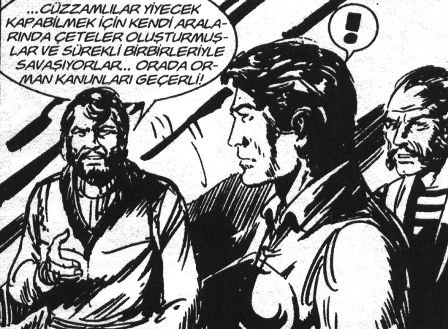

O gün her günkünden daha heyecanlı uyandı. Takım elbiseyi giydi.
Özenle dolabını açtı. Servet Bucurgat’ın altı yıllık Altın Damla tütün kolonyasından yedi-sekiz damla damlattı. Ayakkabılarını üçüncü defa parlattı. Nisan devlet okulunda öğlenci olduğu için hâlâ uyuyordu. Kızını üç defa öptü, kokladı. Sonra gidip sessizce eşini öptü.
Dosyasını kolunun altına aldı. Küçükken annesinin evden çıkarken poposuna üç defa vuruşunu hatırladı. Bu, onun uğuruydu. Evlendikten sonra eşi de işe uğurlarken üç defa vururdu. Ama son dört yıldır kalkmıyordu bile.
Kapıdan adım atarken hayatının sarkaç gibi olduğunu fark etmişti. Bir sağa bir sola gidip gelen ve sadece saati çalıştıran bir sarkaç kadar anlamsız.
Edgar Alan Poe’nun sarkaçları gibi.
Açıkçası Edgar Alan Poe’yu da kızından duymuştu.
Kızından çok şey öğreniyordu.
“Boynuz kulağı geçer” demişler, yüzüne bir gülümseme geldi. Sonra gülümsemesi dondu. Bir tek kızım geçmedi ki! Her gelen geçti, diye düşündü. Kulak bile değilim, en arkadakiyim. Benden en fazla kuyruk olur.
Bugün makus talihi değişecekti. Dört aydır hazırladığı raporu sunmak için Genel Müdür Yardımcısı’ndan randevu almıştı.
Devlet hiyerarşisine aykırı olmasına rağmen, şefini, müdürünü, daire başkan yardımcısını, daire başkanını atlayıp genel müdür yardımcısından randevu almıştı. Görüşme kötü geçerse mahvolurdu. Ama iyi geçerse, ya iyi geçerse...
Üff bir de iyi geçerse.
Şef Hıdır Azgören! Nınınınımm.
Binadan içeri girdi, asansörlerin oraya geldi.
Arkasından güvenlik bağırdı:
– Hıdır Bey takım hayırlı olsun. Çok yakışmış.
Davar kapıdan girerken söylemek yerine, arkasından uzaktan bağırmıştı ki herkes duysun. Cidden herkes dönüp baktı. Birkaç tanıdık yüz gülümseyerek:
– Hayırlı olsun Hıdır Bey çok yakışmış!
İmalı gülümsemeleri görmezlikten geldi. Gülümsedi, “Sizinkiler de çok yakışmış!”
Sonra Tongue-Fue kitabından öğrendiğini yaptı. “Olumsuzu yok farz et.”
– Nasıl güzel hava değil mi?
Herkes camdan dışarı baktı. Bakanlığın kirli camlarından, dışarıdaki boğuk, pis, soğuk havaya baktılar. Birkaçı dönüp şaşkınlıkla Hıdır’a baktı. Bir-iki hanım aralarında fısıldaştılar. Epey bir asansör bekledi. Üç asansör tıklım tıklımken tek asansör boş ve kimse kullanamıyordu, o asansörün başında bir görevli vardı. İşte bugün görüşeceği Genel Müdür Yardımcısı da bu asansörü kullanıyordu. Altı kişiye bir asansör geri kalan bin kişiye üç asansör.
O sıra arkasından cırlak bir ses duydu:
– Hayırlı olsun Hıdır Bey yeni takım çok yakışmış.
Arkasını döndü. Eski odadaki yedi kadının yedisi de topluca duruyordu; belli ki haberi almışlar, hep beraber aşağı inmişlerdi. Yeni takımı görmeye.
Bir anda Greene’in İktidar kitabını hatırladı. Ne diyordu, “Düşmanlarınız gerçek düşüncelerinizi zamanı gelinceye dek bilmesinler. Machiavelli’nin iktidar oyununu oynayın.” Aklından tüm bunlar geçti.
Yedi kadının karşısında Pamuk Prenses gibi kalmıştı işte. Herkesin ona baktığını hissetti. Bozuntuya vermedi, gülümsedi.
Greene olsa ne yapardı? Evet, gülümser ve bu yedi cüceye iltifat ederdi. Beden dilini iyi kullanır; hatta bir elini cebine sokar, “Tanrı toplu olarak sizi bana bir hediye olarak göndermiş olmalı. Bugünüm güzel geçecek” derdi.
Tüm bu düşünceler aklında, bir ayağını öne attı, havayla elini cebine soktu.
“Tanrı toplu olarak...” başlamadan içinden cümleyi bir gözden geçirdi.
Herkesin onu izlediğinin farkındaydı. Ne diyordu Alan Pease “İmajınız her şeyinizdir.” Gülümsedi, nefesini diyaframdan aldı ve yüksek sesle:
“Allah topunuzun belasını versin” dedi. Çığlıklar arasında, kıpkırmızı bir suratla utanç içinde: “Allaam ne dedim ben!” Bir an gelen asansörü gördü ve içeri daldı.
Bu büyük kitaplara ilahi bir kaynaktan gelen yazmalar, kutsal metinlermiş gibi davranırlardı. [...]
Bilgeler iç dünyalarında dalıncın gücüne kuvvetle inanırlar. [...] Varlığının, sahip olduğunu hiç bilmediğin bir boyutuyla bağlantı kuracaksın.[9]
